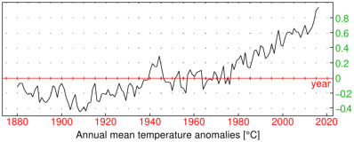

8.2.1 Defining periodic expressions
The periodic command creates
periodic expressions.
-
periodic takes two or four arguments:
-
expr, an expression f(x) where x∈[a,b⟩ for a<b.
- x, a real variable.
- a, a real number specifying the lower bound for x.
- b, a real number specifying the upper bound for x.
The last three arguments can be passed as a single argument x=a..b.
- periodic(expr,x,a,b) or
periodic(expr,x=a..b)
returns a periodic expression
| g(x)=f | ⎛
⎜
⎜
⎝ | x−(b−a) | ⎢
⎢
⎢
⎣ | | ⎥
⎥
⎥
⎦ | ⎞
⎟
⎟
⎠ | , x∈ℝ, |
with period T=b−a, satisfying the property g(x+T)=g(x) for all x∈ℝ.
Example
To define the periodic function f(x)=1−x2 for −1≤ x<1 with period T=2, input:
| f:=periodic(1-x^2,x,-1,1) |
or:
| f:=periodic(1-x^2,x=-1..1) |
|
| |
− | ⎛
⎜
⎜
⎝ | −2 | ⎢
⎢
⎢
⎣ | | ⎥
⎥
⎥
⎦ | +x | ⎞
⎟
⎟
⎠ | | +1
|
| | | | | | | | | | |
|
Indeed:
